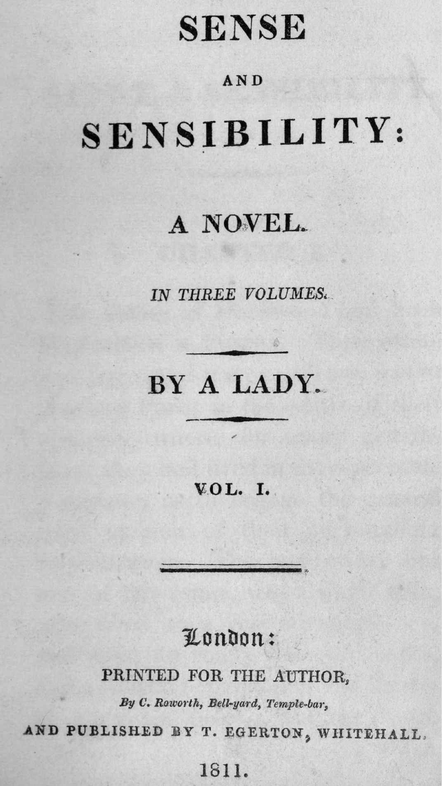
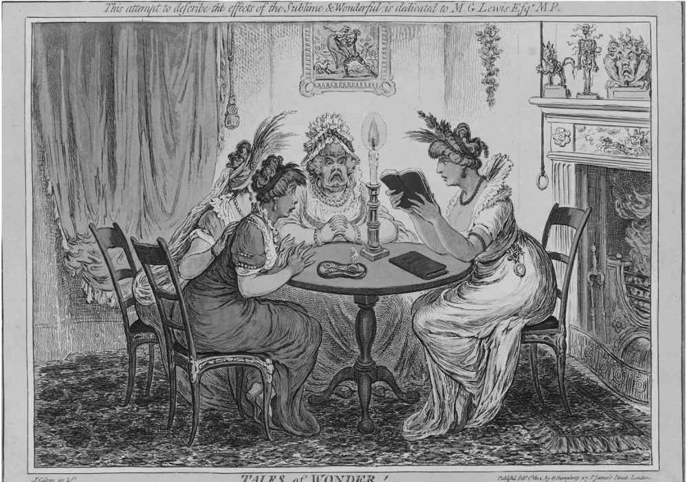

1817年11月，《晨报》上刊登了一则广告，为即将出版的新书做宣传：“《诺桑觉寺》，一则传奇故事；《劝导》，一部小说。作者之前还写过《傲慢与偏见》和《曼斯菲尔德庄园》等作品。”这则广告有两点值得注意：一是匿名作者，二是小说和传奇故事之间隐含的区别。半个世纪前约翰逊博士在他编撰的《英语词典》中，将小说定义为“篇幅短小的故事，总的来说与爱情有关”，同时他将传奇故事定义为“疯狂的冒险故事，与战争和爱情有关”。
约翰逊还为“传奇故事”提供了第二个定义：“谎言；虚构。”在他生活的年代，用散文体创作的虚构作品究竟应该称为小说还是传奇故事，并没有固定的标准，但许多作家认为传奇故事表现出的谎言或虚构的特征更为明显。传奇故事包含“神奇的偶然事件和难以置信的表现”，而“小说描写的是我们更为熟悉的内容；小说离我们很近，为我们呈现阴谋诡计，借助意外和怪事让我们开心，但是这些内容并非极其异常或史无前例”（威廉·康格里夫，小说《隐姓埋名》序言，1692）。传奇故事醉心于疯狂的想象，而小说意在真实反映现实生活。如果一部作品描写的是哥特式修道院中发生的耸人听闻的冒险故事，那么它很可能是传奇故事；如果一部作品旨在规劝年轻女士做出正确的婚姻选择，那么它更像是小说。实际上，《诺桑觉寺》属于后一类作品，但是在书名页上，它既没有被称为“小说”，也没有被称为“传奇故事”。简·奥斯丁本人在注释中将它称为一部“微不足道的作品”。
对一些评论家来说，这两类作品都是“垃圾”。杂志上的专栏作家对“传奇故事、巧克力、小说，以及类似的具有煽动性的事物”表示了不满（《旁观者》，第365期）。小说是一种危险的新型催情剂，其作用类似于喝下巧克力汁——对于女性而言，尤其如此。事实上，女性是18世纪“浪漫小说”的主要消费者。亨利·詹姆斯·派伊（作为桂冠诗人，他的艺术水准实在糟糕）在1792年写道：
鉴于这样的强烈谴责，不难理解为什么身为牧师女儿的简·奥斯丁宁愿自己的名字不要出现在书名页上。
传奇故事是一种历史悠久的文学形式。如果我们所说的“小说”指的是用散文体创作的具有一定长度的叙事作品，通常涉及爱情故事，并且有一条情节主线推动人物四处奔波，那么这一形式的起源可以追溯至古希腊时期的传奇故事。典型的例子是阿波罗尼奥斯的冒险经历，在古典时期和中世纪，这个故事衍生出多个版本。这也是威廉·莎士比亚和乔治·威尔金的戏剧《泰尔亲王配力克里斯》（1608，威尔金此后将其改写为散文体叙事作品）的素材来源。谜语和陌生人，海难和身份错认，霉运和幸运，搜寻和搏斗，危险和营救，些许乱伦，在宫廷阴谋和田园隐居之间来回切换，重新找回丢失的孩子，死者复生：这些就是传奇故事的素材。在莎士比亚的时代，你可以读到许多类似的散文体故事，中间往往插入一些诗歌，然后被搬上戏剧舞台。《冬天的故事》（1610）的情节基于罗伯特·格林的《潘朵斯托》（1588），但是莎士比亚自行加上了一个“好莱坞式的结局”，起到了恢复秩序的作用。

图7 简· 奥斯丁第一部小说的书名页；随后出版的小说虽然提及之前的作品，但从未公开她的名字。
典型的传奇故事以公爵和公主作为人物，并且他们常常会乔装打扮。与此同时，主角要在异国他乡历经戏剧性的冒险。魔法和超自然现象常常在其中发挥一定的作用。由于传奇故事带有逃避的意味，极度不符合现实生活，过多阅读这类作品会导致你对于世界的真实状况产生扭曲的印象。这正是米格尔·德·塞万提斯的出发点，他在《堂吉诃德》（1605，英译本出版于1612年）中戏仿了传奇故事这一体裁。作为反传奇故事，《堂吉诃德》可以看作是原型小说。传奇故事的主角通常循着荷马史诗中奥德修斯的踪迹，去神秘的地中海岛屿游历，遇见来自冥界的女妖，而小说的主角通常遵循堂吉诃德和他的忠实伙伴桑丘·潘沙的足迹，在平凡的道路上行走，遇见坦率务实的客栈老板娘。在欧洲大陆“流浪汉”传统（“流浪汉”是个喜欢耍无赖的或者是来自社会底层的男主角）的影响下，公路小说成为18世纪英国文学极具辨识性的一种形式。苏格兰人托比亚斯·斯摩莱特是此类小说的开创者之一，他出版了《堂吉诃德》和法国流浪汉小说的代表作《吉尔·布拉斯》的英译本。英格兰人亨利·菲尔丁则是此类小说的大师，他笔下的人物包括两位天真的男主角约瑟夫·安德鲁斯和汤姆·琼斯，以及他们各自的同伴帕森·亚当斯和帕特里奇。
阅读太多的传奇故事会导致性格变得怪异，夏洛特·伦诺克斯在《女吉诃德》（1752）中借用并戏仿了这一看法。作家安娜·苏厄德在1787年发表的一篇随笔中提出，传奇故事“现在已经没落”，读者的“兴趣正在减退”，而《女吉诃德》给这一体裁带来了“致命一击”。但凡有评论家宣称某种文学体裁即将衰亡，结果往往会出乎他们的预料，几年后他们将见证这一体裁的强势复兴。安娜·苏厄德也不例外。18世纪90年代，传奇故事的产量急剧增加。当时这一体裁最重要的代表作家是安·拉德克利夫，她先后发表了《西西里传奇》（1790）、《森林传奇》（1791）、《尤道福的谜团》（1794）和《意大利人》（1796）。这些作品后来被称为“哥特小说”，这一典故源自霍勒斯·沃波尔的开创性作品《奥特兰托城堡：一个哥特故事》（1764），这部作品将恐怖故事的场景设在中世纪的哥特式建筑中（在设计自己的住宅“草莓山”时，沃波尔同样使用了这种建筑风格）。
在一片荒凉的山地里（作者的景色描写令人赞叹），有一座阴森的城堡；年轻、天真、美丽、勇敢的女主角与家人和朋友失去了联系；神秘的反面角色有一段不为人知的邪恶经历；令人感到恐惧、看似超自然的事件即将发生。这些是拉德克利夫式传奇故事的固定套路。不过，在这类故事中，女主角的行为总是完美无瑕，你永远也不会相信她真的会遭受强暴，就像塞缪尔·理查森笔下的女主角克拉丽莎那样。理查森的小说出版于二十多年前，虽然没有那么明显的异国情调，但是更让人恐惧，属于真正的悲剧作品。拉德克利夫作品中所有的超自然事件后来都有了合理的解释。这就是她让这一形式变得体面的原因所在——M.G.刘易斯与她形成了鲜明反差，刘易斯的《修道士》（1796）以另类题材作为卖点，包括犯下强奸罪的色情狂修道士、乱伦、恶魔的影响、流浪的犹太人、一群具有施虐狂倾向的修女所居住的城堡、四处闹事的暴民，以及西班牙异端裁判所。萨德侯爵是这一体裁的行家，他认为《修道士》是同类作品中最好的一部，不仅因为它生动描写了性爱和暴力，而且因为它暗示读者：法国大革命制造的血腥恐怖让日常生活变得极为可怕，只有恶魔和超自然元素才能在文学领域中创造出更为恐怖的感受。

图8 女性读者受到哥特风格的刺激：那本《修道士》和摆在桌上的烫发钳都能让头发直立起来（漫画作者：詹姆斯· 吉尔雷）
《诺桑觉寺》戏仿了哥特风格的传奇故事。阁楼里没有疯女人，古老的箱子里也没有隐藏的手稿，里面只有一堆压得很紧的洗熨过的衣服。亨利·蒂尔尼帮助年轻的凯瑟琳·莫兰恢复了理智，她意识到：
凯瑟琳刚从哥特式幻想中清醒过来，就遭遇了和哥特小说女主角相似的命运（这样的情节安排体现出简·奥斯丁惯用的多重反讽）：一个专横的老男人半夜里将她赶出住宅，却没有安排人送她回家。不过，蒂尔尼将军的动机不同于哥特小说中签下魔鬼契约的反面人物：他赶走凯瑟琳，仅仅是因为他发现后者并没有像他所想的那么有钱，因此无法作为儿媳妇给他带来一大笔嫁妆。奥斯丁对于人性的现实主义描写压倒了传奇故事中不真实的世界。在《理智与情感》中，她故技重施，戏仿了当时另一种流行的小说形式——描写极端情感和卢梭式激情的小说。玛丽安·达什伍德代表着情感，但她却出于理智嫁给了穿着法兰绒背心的布兰顿上校。与此同时，埃莉诺·达什伍德代表着理智，但她并没有为了钱嫁给一座豪宅的主人，而是为了爱嫁给一位普通的牧师。
夏洛蒂·勃朗特不喜欢奥斯丁笔下的世界，因为那个世界毫无浪漫气息，人们只关心嫁妆、年收入和举止得体，他们在精心打理的花园里漫步，而不是在荒野中尽情奔跑。奥斯丁笔下的女主角必须学会拒绝那些迷人却又危险的浪漫的男主角，比如《理智与情感》中的约翰·威洛比和《傲慢与偏见》中的乔治·威克姆。勃朗特笔下的罗切斯特先生是这类人物的极端代表，虽然他最后还是被大火所驯服，离开哥特式庄园的断壁残垣，转而接受宁静的家庭空间，在这里简·爱将会是照顾他的天使。相比之下，艾米莉·勃朗特的《呼啸山庄》（1847）没有做出这样的妥协。温文尔雅的林顿一家以及他们的豪宅画眉山庄遭到了鄙视。这部小说将所有的激情和力量都用于强化哥特式人物（身世成谜的希斯克里夫、被情感而不是理智所掌控的凯茜）、地点（荒野里的房子、自然景物、黑暗、坟墓），以及叙事手段（将时间设置在写作此书的二十几年前、嵌套叙事、鬼魂、死于难产）所产生的心理效果。
《诺桑觉寺》除了批评传奇故事，还为小说进行辩护：
上述段落提到的作品是范妮·伯尼和玛丽亚·埃奇沃思的小说，这些作品深深地影响了奥斯丁。伯尼的《卡米拉》（1796）出版时，前面附有订购者的名单，奥斯丁的名字赫然在列。伯尼开创了以“年轻女士进入社会”为主题的一类小说——这也正是她为《埃维莉娜》（1778）拟定的副标题。她教会了奥斯丁一方面从女主角的视角进行写作，另一方面设法让作者的声音与之保持距离。奥斯丁对此做了进一步完善，她采用一种后来被称为“自由间接话语”的创新性叙事手段。借助这一手段，小说叙事可以直接传递女主角的思想和情感，这样的效果通常出现在第一人称叙事中，但也可以利用第三人称叙事来表达对女主角带有反讽效果的评判意见（“这个想法掠过她的心头，如飞箭般迅疾，那就是奈特利先生不能娶别人，只能娶她！”——《艾玛》）。
伯尼是第一个自觉为形式辩护的英格兰作家。“在文人圈子中，”她在《埃维莉娜》的序言中这样写道：
在市场上受欢迎就意味着在文学界得不到尊重：这条规律长期有效。伯尼与传统断然决裂，她没有去讨好那些艺术品味的仲裁者和潜在的资助者，而是努力激发“公众”（这是小说家对于读者的称呼）的兴趣。此外，她还区分了小说和“传奇故事的幻想领域”。在传奇故事中，“丰富的想象力扭曲了虚构故事，理性被排除在外，不可思议的情节所产生的极端效果在现实中不可能实现”。她将小说家的创作艺术定义为：“要根据自然来刻画人物，但不是根据生活；并且，要记录特定时代的风俗习惯。”也就是说，要采取现实主义风格，但是这又不同于后来被称为“索隐体小说”的那种做法，后者将现实中的真人真事经过一番变化后写入小说。18世纪早期，德拉里维尔·曼利在她的作品中使用了这一技巧，结果引发了不少争议。
自相矛盾的是，虽然伯尼声称《埃维莉娜》中的人物源于自然，而不是源于生活，但她又坚持认为，她本人只是一名“编辑”，负责将构成小说叙事的一系列信件汇集成书。在书信体小说中，这是作者偏爱的一种创作策略。对此最有心得的作家是塞缪尔·理查森，他是这一体裁的代表人物，他的几部书信体小说，包括《帕米拉》（1740，一位女仆拒绝男主人的引诱，最终她得到回报，正式嫁给了他）、《克拉丽莎》（1748，魅力过人的反面人物诱拐并强暴一位善良的年轻女子）和《查尔斯·格兰迪森爵士》（1753-1754，一位品德高尚的男人的故事），是当时最具影响力的英格兰小说。“编辑”策略让小说显得异常逼真。以理查森为例，在创作上述小说之前，他整理出版了一部书信集，对于人们的言行举止提出规劝，因此他后来所采取的“编辑”策略模糊了小说和书信集之间的界限。与此类似，丹尼尔·笛福的《鲁滨逊漂流记》（1719）中配有地图，使之看上去更像是一个真实的水手故事，而他的小说《摩尔·弗兰德斯》（1722）则努力效仿现实中罪犯的忏悔录，在18世纪初期，这类忏悔录是书店里颇为流行的题材。这些叙事策略都在某种意义上强调：“这本书是真实的，这不是一个充满幻想的传奇故事。”
亨利·菲尔丁采取另一种方法来回避“小说”和“传奇故事”之间的分类难题：他将《约瑟夫·安德鲁》（1742）称为“用散文体创作的喜剧史诗”，并且用喜剧化的古典史诗手法来创作《汤姆·琼斯》（1749）——比如，祈求缪斯赋予灵感，描写一场气势磅礴的战役等等。在伯尼之前，作家不愿意站出来声明：“这本书是一部小说，一种新的虚构作品。这种新的叙事作品相比之前的文学形式，在描写人物和社会时带给公众的阅读体验更加真实。”